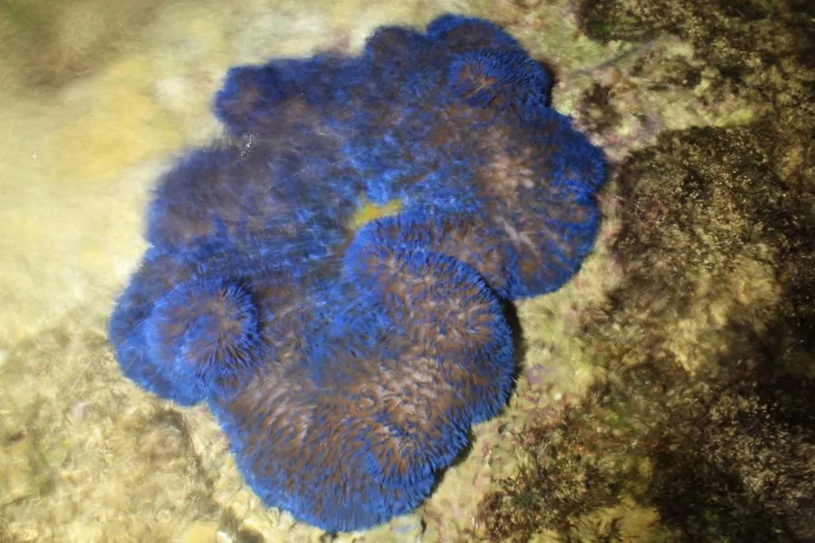

其他无脊椎动物 · 动物界
地毯海葵 Stichodactyla gigantea

触手密集如地毯的常见大型海葵，与小丑鱼共生，分布在印度—太平洋珊瑚礁的浅水沙地上，蜇刺较强。
- 分类
- 门刺胞动物门纲珊瑚纲目海葵目科大海葵科属地毯海葵属
- 栖息环境
- 印度—太平洋珊瑚礁的浅水沙地和礁坪
- 地理分布
- 印度洋和西太平洋，包括中国南海和东南亚
- 保护级别
- 暂无评估；受水族贸易和珊瑚礁退化影响
物种志
地毯海葵的口盘可伸展到 1 m 以上，密布短而细的触手，触手呈黄绿、褐绿或紫褐色，铺展在沙地和礁石上，看起来像一块厚厚的地毯。它属于大型海葵，身体基部附着在礁石或沙中。
它生活在印度—太平洋珊瑚礁的浅水沙地和礁坪，靠触手捕捉小鱼、虾类等猎物，也吸收虫黄藻提供的营养。地毯海葵与小丑鱼、海葵虾等形成共生关系，这些动物靠体表黏液避免被蜇伤，同时为海葵清理和吸引猎物。蜇刺对人类的刺激较强，接触后可能红肿疼痛。它分布于印度洋和西太平洋，包括中国南海，是珊瑚礁生态中显眼的组成部分。潜水时看到它，最好保持一定距离，不要用手触碰。
形态与习性
- 食性捕食小鱼、虾类，也吸收虫黄藻营养
- 体型口盘可伸展到 1 m 以上
- 形态触手密集短小，铺展如地毯
- 共生与小丑鱼、海葵虾等互利共生
- 毒性蜇刺较强，接触后可能红肿疼痛
- 分布印度洋和西太平洋珊瑚礁
趣味知识
- 地毯海葵的触手密密麻麻，铺在沙地上像一块厚地毯。
- 小丑鱼和海葵虾住在它的触手间，靠体表黏液避免被蜇。
- 它的蜇刺比海月水母强得多，潜水时不要随意触碰。